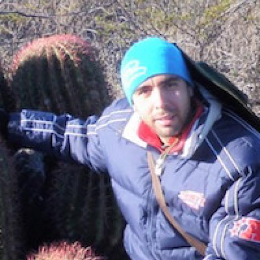

Luis Arias Medellin

PhD student at the University of Toronto. His current project focuses of the effects of habitat loss and fragmentation on Heliconia tortuosa population.
Dr. Consuelo Bonfil (Google Scholar)
Researcher at Universidad Nacional Autónoma de México focusing on restoration ecology of forests and their sustainable management, especially temperate and tropical dry forests.
Dr. Teresa Valverde (Google Scholar)
Researcher at Universidad Nacional Autónoma de México focusing on population ecology of plant species, especially using demographic tecniques.
“ Lefkovitch matrix models use life stage or size-category rather than age as their classifying system. I imagine this is beneficial when age is difficult to determine or individuals may spend varying amounts of time within certain life stages. Are there other reasons that a life stage matrix model would be preferred over an age-structured one? ”
“ The authors state that 204 individual plants were found in a sample area of 5,094 $m^2$ in Xochicalco and 215 individual plants were found in a sample area of 8,726 $m^2$ in Tembembe. Could the difference in population density be responsible for differences in seedling survival? How would we determine this? ”
“ Can population matrices be effective for plant species that reproduce extremely slowly or irregularly? Desert plants may only bloom once every 20 or so years depending on environmental conditions. Is this matrix model the appropriate tool when stage transition due to environmental variability is high? ”
(relative contribution of each transition to the growth rate $\lambda$)
(using Tembembe matrix)
“ How would genetic variation be maintained in areas where the locals are utilizing the plants, knowing that mast seeding years for agave are not annual? ”